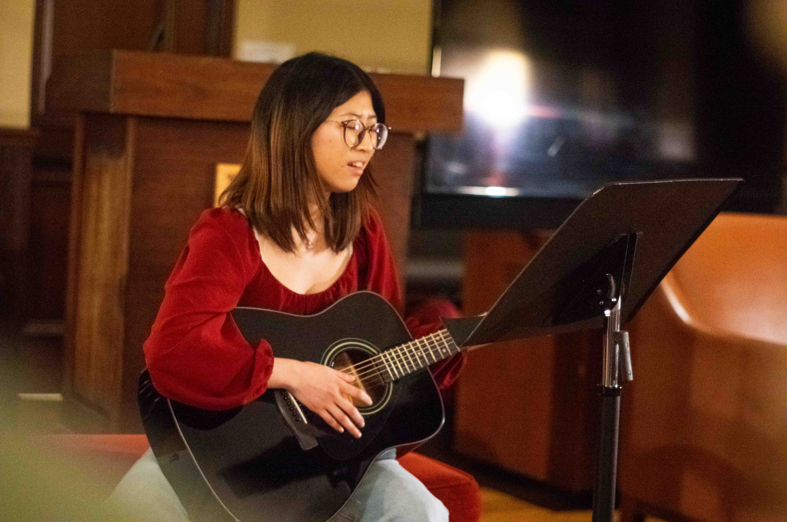
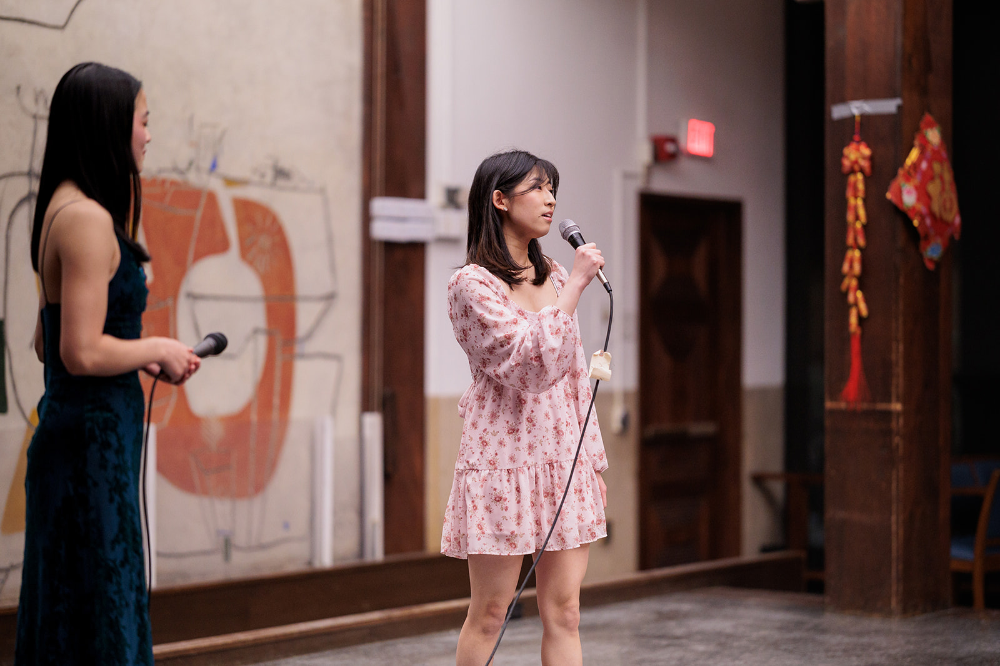
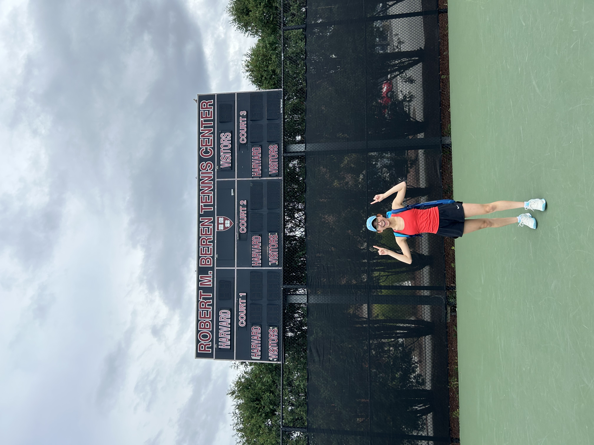
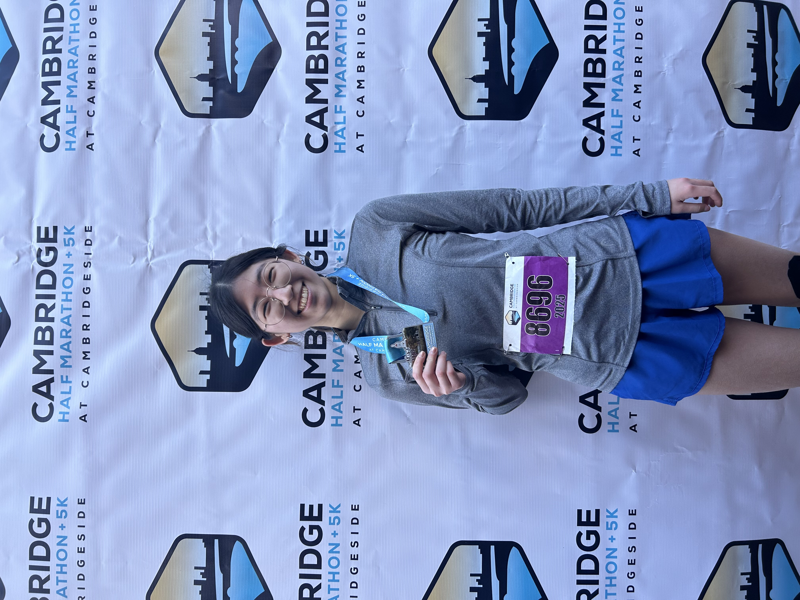

Music
I've been a self-taught guitarist and singer since middle school, and music has been both a creative and emotional outlet for me ever since I was young. Some of my favorite memories since coming to Harvard have included hosting impromptu karaoke sessions with friends, as well as organizing and performing in Tiny Desk concerts.


Tennis
I have been playing tennis since I was young, and played both singles and doubles on my high school's varsity team (Colorado 2024 State Finalists). Currently, I play recreationally as a member of Harvard's Competitive Club Tennis team!

Running
I started my running journey in the summer of 2025, and recently ran my first race at the 2025 Cambridge Half Marathon last November!
